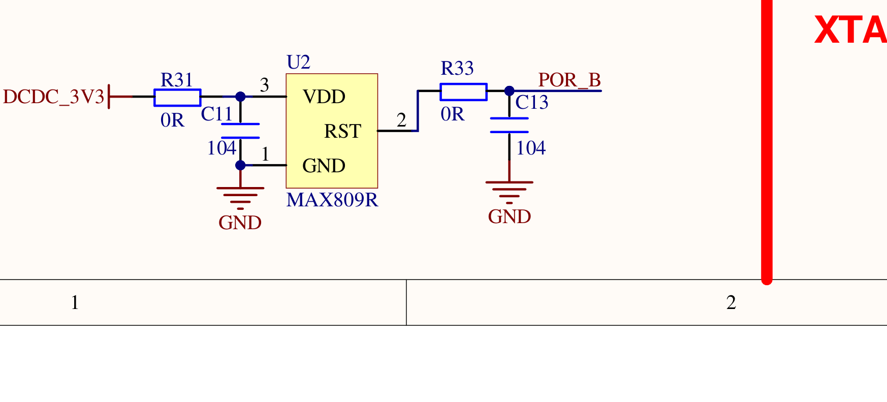

运放与比较器：虚短虚断、跟随、迟滞
运放是模拟电路里唯一一个「只要记住两条假设，就能算完 90% 电路」的器件：虚短（两输入电压相等）、虚断（输入不吸电流）。比较器则是它的「开关版」：不带负反馈，专门把两个电压比大小。这一章把四种组态的增益推一遍，再讲清「为什么给 ADC 采样必须先加跟随器」，最后用板上 MAX809R 复位监控做实。
读完这一章，你应该能
- 说清虚短、虚断成立的前提（负反馈 + 理想运放），以及不成立时会怎样
- 推出跟随、同相、反相、差分四种组态的增益公式
- 解释跟随器为什么能解决「高源阻抗 + ADC 采样电容」的精度问题
- 用正反馈算比较器的迟滞窗口，理解为什么单阈值比较器会抖动
- 读懂板上 MAX809R：阈值、复位延时、POR_B 的低有效逻辑与 R33/C13 的作用
1.8.1两条假设：虚短与虚断
理想运放有三个特征：开环增益无穷大、输入阻抗无穷大、输出阻抗为零。接上负反馈后，就得到两条黄金假设：
- 虚短：V+ = V−。因为增益无穷大，任何微小差压都会让输出饱和；负反馈把差值压到「几乎为零」。
- 虚断：I+ = I− = 0。输入阻抗无穷大，不吸电流。
注意前提：必须闭环负反馈。开环（比较器）或正反馈时虚短不成立——这是初学者最常犯的概念错误：「为什么比较器两输入不相等？」因为它们本来就不该相等。
1.8.2四种组态：四条增益公式
用虚短虚断 + 节点电流法，四种组态几行就能推完：
| 组态 | 增益 | 输入阻抗 | 典型用途 |
|---|---|---|---|
| 跟随器 | A = 1 | 极高 | 阻抗变换、驱动 ADC/长线 |
| 同相放大 | A = 1 + Rf/Rg | 极高 | 传感器小信号放大 |
| 反相放大 | A = −Rf/Rin | = Rin | 需要反相/精确增益 |
| 差分 | A = Rf/Rin（四电阻匹配） | 较高 | 抑制共模、电流采样 |
推导示范（反相）：V− 虚地（=V+=0），输入电流 I=(Vin−0)/Rin，全部流过 Rf（虚断，电流无处可去），所以 Vout=0−I·Rf=−Vin·Rf/Rin。
同相组态：V−=Vin，Rg 与 Rf 构成分压，V−=Vout·Rg/(Rg+Rf)，联立得 Vout=Vin(1+Rf/Rg)。注意同相组态的增益永远 ≥1，不能小于 1——想衰减就得用分压或反相组态。
1.8.3跟随器：为什么它是 ADC 的「救命稻草」
回到第 1.2 章那个事故：100k/100k 分压监测 12V，源阻抗 50k，直接接 ADC，读数随采样率跳变。原因：ADC 采样瞬间接入一个几 pF 的采样电容，需要一个「电荷包」快速充满；源阻抗太大，RC 时间常数远大于采样窗口，读数就偏低且不稳。
加一级跟随器后：
- 运放输入阻抗极高（MΩ–GΩ 级），对分压点几乎不加载；
- 输出阻抗极低（几十 Ω），能在采样瞬间提供电荷；
- 增益为 1，不改变电压值。
这就是为什么「高阻节点 + ADC」这个组合，教科书上永远画一个跟随器。判据：源阻抗 × 采样电容 > 采样窗口 就必须加缓冲。
1.8.4单电源运放：三个必须确认的边界
板上只有 3.3V/5V 单电源，没有 ±15V，所以选运放必须确认：
- 是否轨到轨（Rail-to-Rail）：输入共模范围能不能到电源轨？输出能不能摆到接近 0V 与 Vcc？普通运放输入到不了正电源，输出也差 1–2V。
- 共模范围：同相端电压必须落在手册标明的范围内，否则虚短失效、输出反相。
- 输出摆幅与负载：带 10k 与带 100Ω 的摆幅完全不同，手册会给曲线。
另一个常被忽略的点：单电源下「地」是 0V，信号必须偏置在中间（如 Vcc/2）。交流信号直接进来会被削掉负半周——这就是「单电源运放要加虚地偏置」的原因。
1.8.5比较器：为什么必须加迟滞
比较器没有负反馈，输出只有高/低两态：V+ > V− 输出高，反之低。问题是：当输入正好在阈值附近抖动（噪声）时，输出会疯狂翻转，后级计数器/中断被打爆。
解决办法是正反馈迟滞：把输出的一部分送回同相端，让「上升阈值」和「下降阈值」分开。以反相比较器为例，回差：
ΔV = VOH × R1/(R1+R2)（近似，取决于接法）
这样噪声幅度小于 ΔV 时，输出就不会来回跳。代价是「判断变迟钝」：输入要越过更宽的窗口才动作，所以迟滞要按噪声幅度设计，不能拍脑袋取大。
另一个选择是软件消抖（连续采样 N 次一致才认），但硬件迟滞更快、更可靠，电源监控类场合基本都用硬件。
1.8.6板上真实：MAX809R 复位监控

MAX809 内部是「基准 + 比较器 + 延时」三件套：
- 监测 VDD，当 VDD 低于阈值（R 档约 2.63V，S 档 2.93V、T 档 3.08V）时，RST 拉低；
- VDD 恢复后，RST 继续保持低电平一段复位延时（典型 140–460ms，视型号），保证 SoC 时钟稳定后才放行；
- 输出是低有效（POR_B 的 _B 就是这个意思），所以 SoC 的 POR_B 脚低电平即复位。
为什么用 2.63V 而不是 3.0V？因为要给 3.3V 轨的正常容差（±5% → 3.135V）留空间：阈值必须低于 3.135V 才不会误复位，又要高于 SoC 的最低工作电压，2.63V 是折中。这也解释了「为什么不能随便换型号」：S 档 2.93V 在 3.3V 掉到 3.0V 时就复位，可能过于敏感。
R33 0Ω + C13 104 形成一个小 RC（若后级有上拉，τ 取决于上拉值），主要作用是抑制复位线上的窄脉冲干扰，并给走线一个本地电荷；但 C13 不能取太大，否则复位释放变慢，SoC 可能错过时序。
1.8.7怎么测：虚短与阈值的实测
- 验虚短：给运放接成跟随器，输入 1.000V，量输出与两输入。三者应在几 mV 内一致；若差几十 mV，说明失调电压大或不是轨到轨。
- 验增益：输入 0.5V，按公式算输出，实测对比；注意输入必须在共模范围内，否则结论无效。
- 验阈值：用可调电源缓慢升/降 MAX809 的 VDD，记录 RST 翻转的两个电压（上升阈值与下降阈值）。若两者差很多，说明器件带迟滞（正常）；若完全一样，可能是软件/后级影响。
三个常见错误
① 把比较器当运放接负反馈：比较器内部没有相位补偿，闭环会振荡。
② 单电源运放输入接地：普通运放的共模范围到不了 0V，输入贴近地时输出会反相或锁死。
③ 复位线挂大电容：释放变慢，SoC 在电容充电期间反复复位或进入异常启动。
1.8.8四个选型误区
- 不看共模范围。输入贴近电源轨时普通运放会失效。
- 不看输出摆幅。轨到轨也要看负载，带 100Ω 时摆幅会缩。
- 用比较器做放大。没有补偿，闭环振荡。
- 迟滞取太大。判断变迟钝，小信号直接被吞掉。